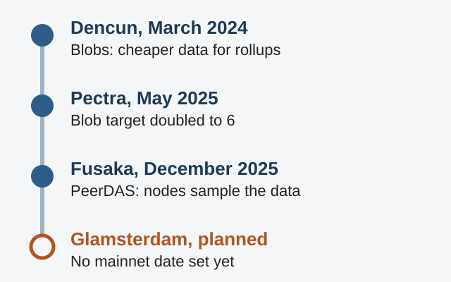

Ethereum’s Scaling Roadmap
Ethereum’s developers have chosen a “rollup-centric” plan. Layer 2 networks do most of the day-to-day work, and Layer 1 focuses on being a secure and neutral base that rollups can post data to. This page explains the main upgrades so far and what is planned next.
Status as of November 25, 2026. Upgrade dates and numbers come from public sources listed on the References page, and plans can change.

Upgrade Timeline
| Upgrade | When | Main idea for scaling |
|---|---|---|
| Dencun | March 2024 | Added blobs (EIP-4844), a cheaper place for rollups to post data |
| Pectra | May 2025 | Raised blob capacity and added account features such as EIP-7702 |
| Fusaka | December 2025 | Added PeerDAS so nodes can check blob data without downloading all of it |
| Glamsterdam | Planned (not yet live) | Faster block handling and fee changes; reports say it may slip into 2027 |
Blobs and PeerDAS
A blob is a large chunk of temporary data that rollups attach to Ethereum blocks. Blobs cost far less than normal transaction data, so rollup fees dropped after Dencun. The problem is that every node used to download every blob. PeerDAS (“data availability sampling”) in Fusaka lets each node download only small pieces and still be confident that the whole blob was published. That makes it safer to allow more blobs per block.
| Upgrade | Target | Maximum |
|---|---|---|
| Dencun | 3 | 6 |
| Pectra | 6 | 9 |
| Fusaka and later | Raised again in small steps after PeerDAS; check ethereum.org for the current values | |
What Is Planned Next
Glamsterdam is the next large upgrade. The goals discussed publicly include changes to how blocks are built (called ePBS), a way to process transactions in parallel (block-level access lists), and re-pricing some operations so the network can safely handle more work. Some news sources report that the launch date has moved later, so treat any date as a target, not a promise.
The Ethereum Foundation’s 2026 priorities put it in three words: Scale the network, Improve UX (make it easier to use), and Harden the L1 (make the base layer stronger). A longer-term research goal is single-slot finality, which would confirm blocks in one step instead of the roughly 15 minutes it takes today.
What This Means for Layer 1 and Layer 2
- Layer 1 is becoming the settlement and data layer. It does not try to be the cheapest place to run apps.
- Layer 2 gets cheaper as blob capacity grows, so fees should stay low even when demand rises.
- The tradeoff is that users must pick between many Layer 2 networks and trust each one’s own setup. See Security and Risks.
Related pages: Layer 1, Layer 2, References.